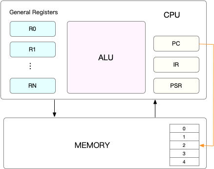
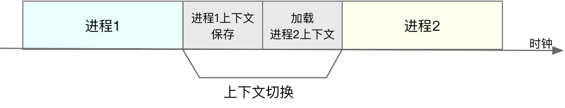

CPU上下文切换就是罪魁祸首
任务运行前的准备工作
CPU都要知道任务从哪里加载、从哪里开始运行，需要系统事先设置好CPU寄存器和程序计数器（Program Counter，PC）
- CPU寄存器：CPU内置容量小、速度极快的内存
- 程序计数器：用来存储CPU正在执行的指令位置、或将执行下一条指令的位置
- 这就是CPU上下文

- CPU上下文切换：把前一个CPU上下文（cpu寄存器及程序计数器）保存起来，然后加载新的任务的上下文到这些寄存器及程序计数器，然后跳转到寄存器及程序计数器所指的位置，运行新的任务
- 进程、线程是最常见的任务
- CPU上下文场景分类：
- 进程上下文切换
- 线程上下文切换
- 中断上下文切换
进程上下文切换
linux特权等级，把进程运行空间分为：内核空间、用户空间
- 内核空间：具有最高权限，可以访问所有资源。
- 在此运行的进程叫进程的内核态。
- 用户空间：只访问受限资源，不能访问内存等硬件设备，必须通过系统调用陷入到内核中，才可以访问特权资源。
- 在次运行的进程叫进程的用户态。
- 从用户态到内核态，需要经过系统调用来完成。
- 一次系统调用，发生了两次CPU上下文切换
进程上下文切换与系统调用的区分：
- 进程上下文切换是从一个进程切换到另外一个进程
- 系统调用是一直同一个进程在运行
- 系统调用过程称为特权模式切换，而不是上下文切换
- 进程切换只发生在内核态
- 保存上下文和恢复上下文并不是”免费“的

Linux通过TLB（Translation Lookaside Buffer）管理虚拟内存到物理内存的映射
触发进程调用的场景：
- 其一，为了保证所有进程可以得到公平调度，CPU 时间被划分为一段段的时间片，这些时间片再被轮流分配给各个进程。这样，当某个进程的时间片耗尽了，就会被系统挂起，切换到其它正在等待 CPU 的进程运行。
- 其二，进程在系统资源不足（比如内存不足）时，要等到资源满足后才可以运行，这个时候进程也会被挂起，并由系统调度其他进程运行。
- 其三，当进程通过睡眠函数 sleep 这样的方法将自己主动挂起时，自然也会重新调度。
- 其四，当有优先级更高的进程运行时，为了保证高优先级进程的运行，当前进程会被挂起，由高优先级进程来运行。
- 发生硬件中断时，CPU 上的进程会被中断挂起，转而执行内核中的中断服务程序。
线程上下文切换
线程是调度的基本单位，而进程是资源拥有的基本单位
进程与线程区别：
- 当进程只有一个线程时，可以认为进程就等于线程。
- 当进程拥有多个线程时，这些线程会共享相同的虚拟内存和全局变量等资源。这些资源在上下文切换时是不需要修改的。
- 另外，线程也有自己的私有数据，比如栈和寄存器等，这些在上下文切换时也是需要保存的。
线程上下文切换场景：
- 前后两个线程属于不同进程。此时，因为资源不共享，所以切换过程就跟进程上下文切换是一样。
- 前后两个线程属于同一个进程。此时，因为虚拟内存是共享的，所以在切换时，虚拟内存这些资源就保持不动，只需要切换线程的私有数据、寄存器等不共享的数据
中断上下文切换
中断：cpu上下文切换；中断执行会打断进程的正常调度和执行
对同一个CPU来说，中断处理比进程拥有更高的优先级